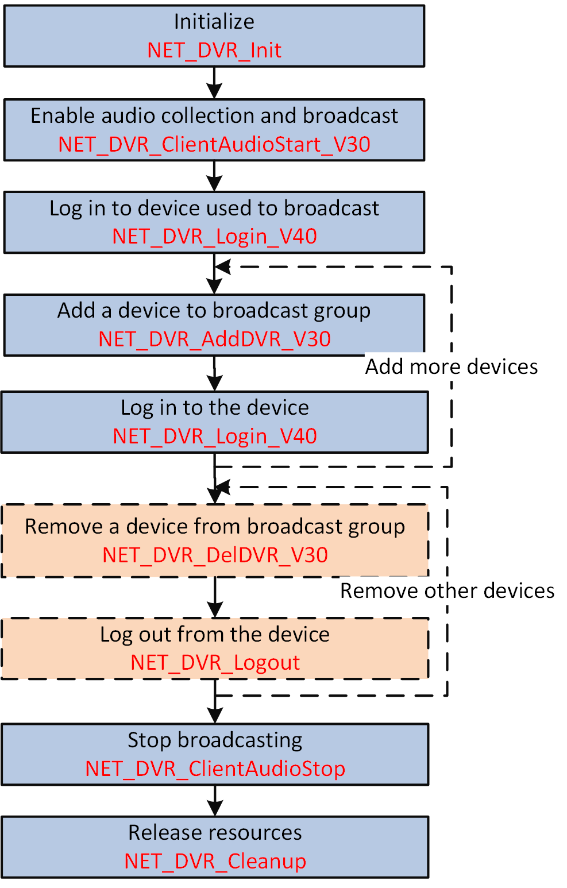

When there are multiple entrances and exits in a park or campus, and the
booth of each entrance and exit has mounted with cameras, the monitoring center can send
audio information to multiple or all cameras at same time as needed via the audio
broadcast.
Make sure you have called NET_DVR_Init to
initialize the development environment.

Figure 1 Programming Flow of Audio
Broadcast
-
Call NET_DVR_ClientAudioStart_V30 to enable the audio
collection and broadcast.
-
Call NET_DVR_Login_V40 to log in to the device that used to
broadcast.
-
Add devices to the broadcast group for receiving audio.
-
Call NET_DVR_AddDVR_V30 to add a device to the
broadcast group.
-
Call NET_DVR_Login_V40 to log in to the added
device.
- Optional:
Repeat the above two steps to add more devices to the broadcast group
if you want to broadcast the audio to multiple devices.
- Optional:
Remove devices from the broadcast group.
-
Call NET_DVR_DelDVR_V30 to remove a device from the
broadcast group.
-
Call NET_DVR_Logout to log out from the removed
device.
- Optional:
Repeat the above two steps to remove other devices from the broadcast
group.
-
Call NET_DVR_ClientAudioStop to stop
collecting and broadcasting audio.
Call NET_DVR_Cleanup
to release resources.